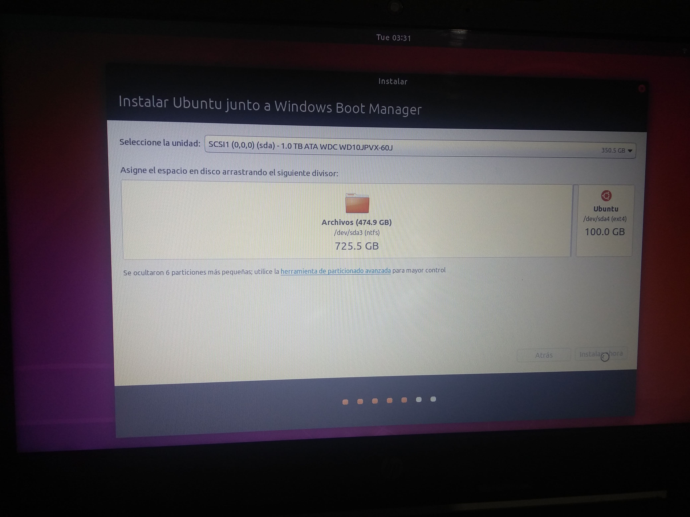

Actividad 01
Objetivo: Instalar Windows y Linux desktop nativo y describir características sobresalientes de cada sistema operativo
Windows
Linux
Windows
Lo primero que se necesita es tener una USB booteada, que nos permita almacenar la herramienta para instalar el sistema operativo sin problema.
Para obtener la herramienta, da click aquí
Una vez que empezamos la instalación, lo primero que nos aparecerá será la pantalla para elegir nuestro idioma

Una vez elegido el idioma de nuestra preferencia, lo siguiente es esperar a que la herramienta inicie el asistente de instalación. A pesar de ser un sistema operativo, el asistente nos permitirá facilitar la instalación del mismo.

Después de haber seleccionado nuestra unidad o partición en la que instalaremos el sistema operativo, el asistente comenzará a instalar el sistema, junto con algunas características y actualizaciones para obtener una mejor experiencia de usuario

Al terminar la instalación, nos pedirá que ingresemos la región en la cual nos encontramos. Generalmente se selecciona nuestra región, pero en caso de no ser así, se puede elegir de manera manual.

Una vez elegida la región, nos pedirá la distribución del teclado con el que trabajaremos. Al igual que ocn la región, se seleccionará automáticamente nuestro tipo de teclado. En caso de ser erroneo o diferente, se puede elegir otro dentro de la lista

Después de haber elegido la distribución del teclado, nos pedirá conectarnos a una red WiFi en caso de contar con dicha opción. Si es así, elegimos nuestra red doméstica o de trabajo, procedemos a escribir la contraseña en caso de ser necesario y damos en "Conectar"

Después de conectarnos a nuestra red, nos pedirá iniciar sesión con nuestra cuenta de Microsoft. En caso de tener una ingresamos nuestro correo y nuestra contraseña. En caso de no tenerla podemos crear una cuenta nueva para poder encontrar una mejor experiencia de usuario, o en su defecto, omitir este paso.

Los siguientes pasos consisten en ingresar y seleccionar diferentes formas de iniciar sesión una vez que iniciamos la computadora. Se puede ingresar un NIP o una contraseña, o se puede iniciar con la contraseña del correo que hayamos registrado anteriormente. Después nos pedirá que seleccionemos las actualizaciones y configuraciones de seguridad según nos convenga. Lo ideal es dejar todo por default, tal y como el sistema nos lo señala automáticamente
Una vez seleccionado todas estas configuraciones, lo que sigue es esperar a que la herramienta haga lo suyo. Terminará un par de actualizaciones y configuraciones que le señalamos y después iniciará windows.

¡Listo! Esta pantalla significa que nuestro sistema operativo Windows se ha instalado correctamente!
Linux (Ubuntu)
Lo primero que se necesita es tener una USB booteada, que nos permitirá almacenar la herramienta para instalar el sistema operativo sin problema.
Para obtener el ISO de Linux da click aquí. Y si deseas saber como bootear una USB, puedes checar la siguiente liga.
Ya que la herramienta empiece la instalación, lo primero que haremos es seleccionar "Install Ubuntu" dentro del menú que nos aparece, lo que nos permitirá iniciar el asistente de instalación.

Después nos aparecerá una ventana con un mensaje de bienvenida y una lista de idiomas para elegir el que más nos convenga. Por default aparecerá inglés, sin embargo si se desea cambiar a español se puede seleccionar dicho idioma.

Una vez elegido el idioma, nos aparecerá un listado de distribuciones de teclado que tiene el sistema operativo, por default nos aparecerá el que es acorde a nuestro idioma, sin embargo en caso de ser cambiado, se puede seleccionar el adecuado.

Una vez elegida la distribución del teclado, nos aparecerá un listado de redes inalámbricas en caso de contar con dicha opción. En caso de ser así, seleccionaremos nuestra red, y procederemos a introducir la contraseña de dicha red.

Una vez elegida la red a la que nos conectaremos, nos preguntará el asistente el tipo de instalación que deseamos en nuestra computadora. Por defecto, y la opción más adecuada, será la opción de 'Instalación Normal'.

En caso de que tu computadora cuente con otro sistema operativo como Windows, nuestro asistente nos preguntará si deseamos instalar Ubuntu junto a Windows o si deseamos conservar solo Ubuntu, para fines de la actividad, dejaremos instalado Windows e instalaremos Ubuntu junto con el.

En la siguiente pantalla nos aparecerá que seleccionemos la cantidad de memoria que deseamos destinar al sistema operativo, en dado caso de que ya hayamos hecho una partición, podemos ir a las configuraciones avanzadas y seleccionar la partición, en caso contrario, podemos solo seleccionar el espacio dentro del espacio libre del disco y dar click en "Instalar ahora".
Aparecerá una barra de progreso donde se nos indicará el estatus de la instalación, en la cual nos avisará en que proceso se encuentra y el tiempo restante.
Una vez instalado el sistema operativo, nos aparecerá un aviso donde menciona que la instalación se ha completado y por lo tanto necesitamos reiniciar el sistema.
Una vez ya reinciado, nos aparecerá el escritorio de Ubuntu
¡Listo! Esta pantalla significa que se ha instalado Ubuntu correctamente.